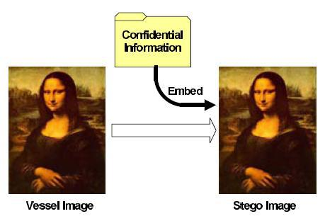
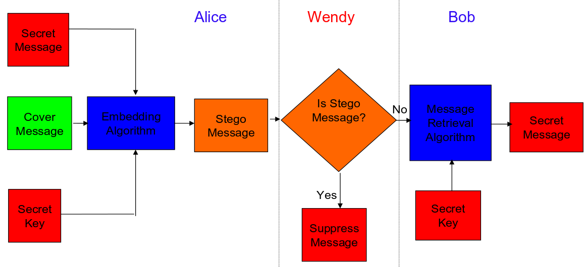

Image Steganography:
Applications and Algorithms
-Riddhish Bhalodia
Steganography? Are you ill?
No, Thank You!
Steganography is simple, it's just a method to hide the existance of the message to be transmitted.

I predict a Why?
To covertly send messages and its uses yada yada yada... Maximum terrorist communications which occur is via image steganography and we need to be able to break them.
The earliest use of steganography(GK: Steganos: Conceled + Graphein: Writing ) was done in Greece, where kings communicated vai slaves and the message was tattoed on their heads, and ones the hair grows back they were sent to the reciever.
Types
There are four primary form of steganography
- Text Steganography
- Image Steganography
- Audio/Video Steganography
- Protocol Steganography
Something Fun
Prisoners Dillema(Modified Version)
Let's see how many of you recognizes this sound clip
This is actually a very simple example of audio steganography.
So let's get going with Image Steganography algorithms
Characteristic Features
There are four basic parameters to decide upon the performance of a steganographic techniques.They are as follows:
Perceptibility: This deretmines how much the embedded message distort the cover medium to result a change in it's perception judged relative to the original cover image.
Capacity: This feature determines the amount of information that can be hidden relative to the change in the level of perceptibility.
Characteristic Features (Cont.)
Robustness to Attacks: The ability of the steganigraphic technique that the embedded message remains intact in the stego medium againts efforts to destroy the embedded data.
Tamper Resistance: This is the ability of the steganographic technique that the embedded message is difficult to alter, so that the information if recieved has a higher gaurantee to be accurate.
Modern Framework
This picture explains both steganography as well as steganalysis. Here Wendy can either be active or passive.

Least Significant Bit
LSB is one of the most basic and the simplest algorithms for image steganography. As the name suggests that we modify the last bit of each byte.
The images we deal with are either 8-bit grayscale image or 24-bit color images. The basic idea being that the perception of the cover image does not alter much with +1 or -1 in the pixel intensity. In a color image we have a pixel with a byte assigned to each of the red ,green and blue channels and hence we can hide 3bits per pixel in a color image.
Bytes and bits
Consider a grid of three pixels of a 24-bit image as follows:
We want to embed the letter E into these pixels, whose ASCII value is 69 which in binary is 01000101, that is
We observe here we needed to change only three bits from the cover image, on an average we only need to modify half the bytes.
LSB
Sometimes we assign a symbol break, assigning zero after every byte embedded.
Let's look at an example.
Pros and Cons
- > Image degradation is not easy.
- > The capacity of the data storage relative to the change in perceptibility is more.
- > The robustness of the technique is low.
- > The hidden information can be destroyed or worse altered by simple attacks.
The Next Step
We have seen that LSB is quite easy to detect and break. So we move on to modifying the transform domain. JSteg is one of the oldest algorithms to have been implemented for image steganography and it uses the concepts of DCT(discrete cosine transform). Unfortunately or fortunately this too have been broken. We will go through both how to make and break it.
Approach: Simple LSB in the DCT domain. It is broken by using chi-squared distributions which we will not discuss.
Few More Points
- Was assumed to be infeasible as it uses JPEG Domain, as JPEG image compression has a lossy part and hence it was assumed that any information hidden would be corrupted by the compression itself.
- So we hide it when the lossy part is done.
- The pseudocode of the algorithm is simple
Pros and Cons
- > Lots of online tools and is avaliable online here .
- > JPEG format has become a defacto across USENET and FTP based sites.(atleast there was a time)
- > The wide control available over image quantization makes it very difficult to establish whether or not the inaccuracies which do appear are caused by steganographic data or by lower-quality quantization.
- > Any frequency attack will totally destroy this.
- > As it is so popular, the steganalysis is also very advanced and robust, if performed it is sure to destroy your data.
Advances
- 1. JSteg was published
- 2. JSteg was broken
- 3. OutGuess was published
- 4. OutGuess was broken
- 5. F5 was published
- 6. F5 was broken
THANK YOU!
* funnily enough, it's not a prezi ;) ** It's in impress.js, google it!